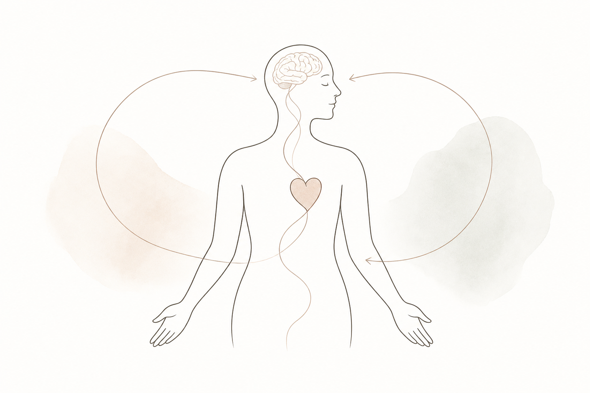
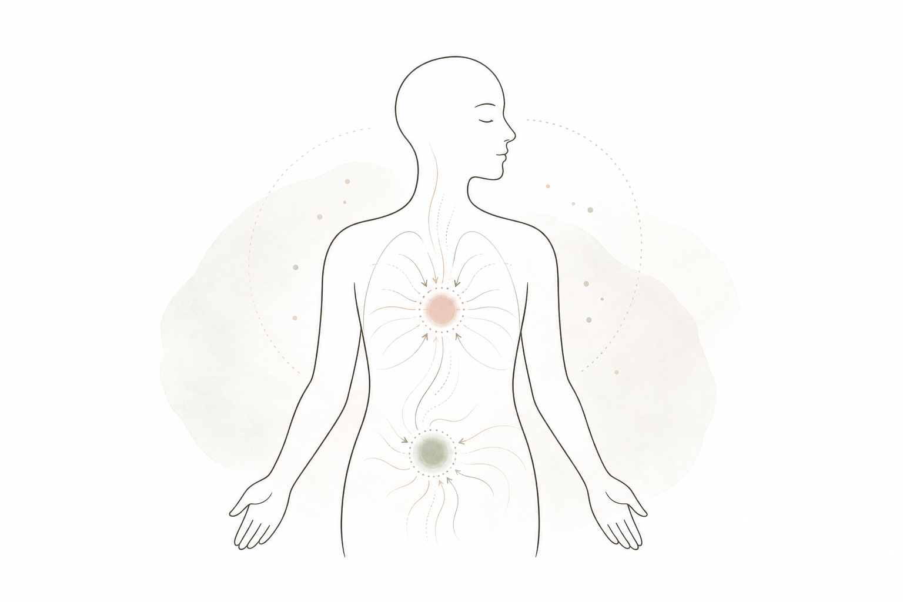
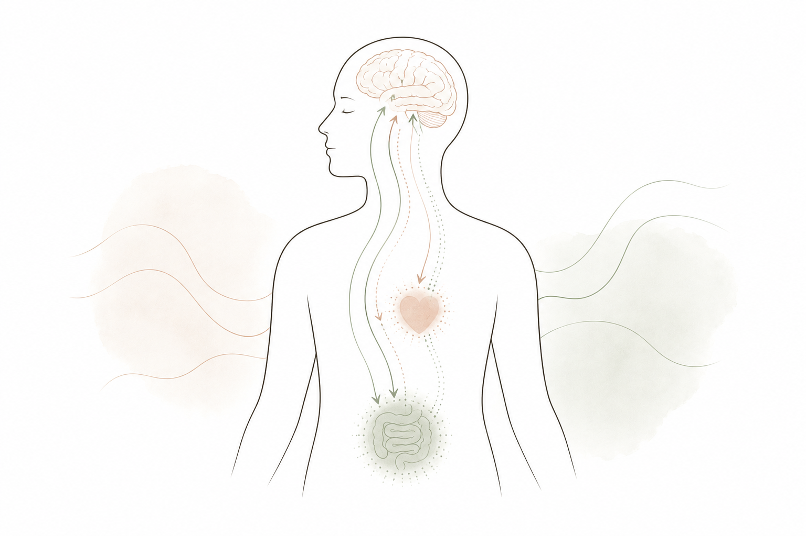
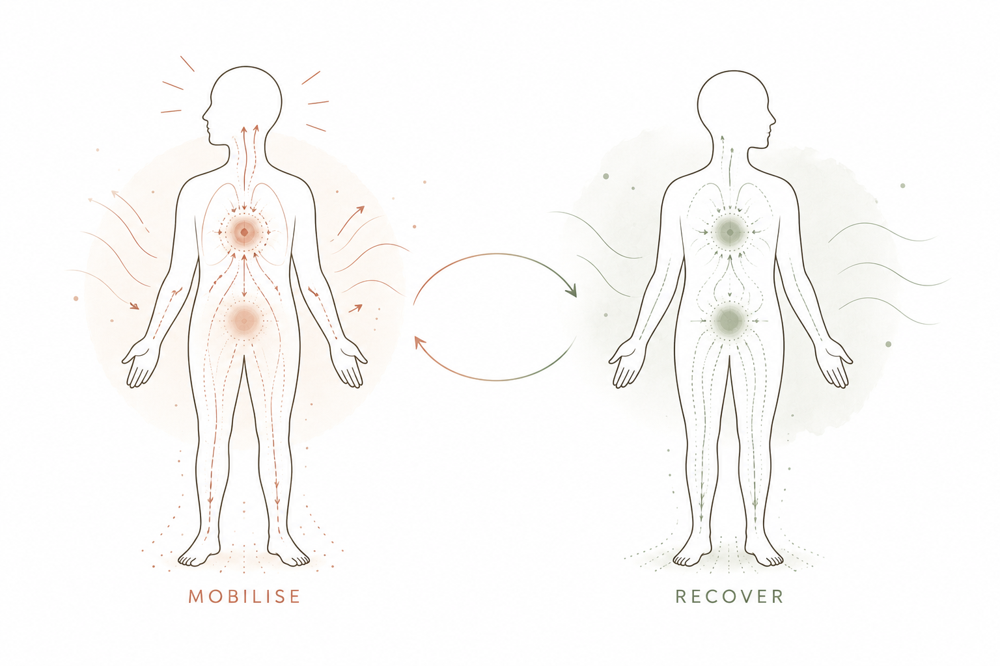
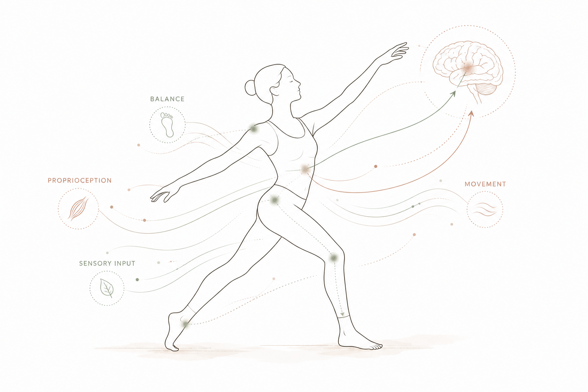
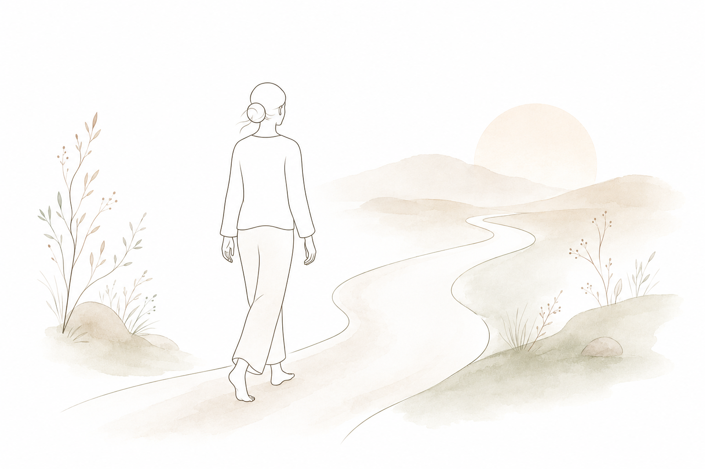

You may have come across the word somatic recently.
Somatic comes from the Greek word soma, meaning body. In the context of mental health, somatic approaches pay attention not only to what you're thinking and talking about, but also to what you are experiencing physically.
That might mean noticing:
- tension in your shoulders
- a tight chest
- changes in your breathing
- a feeling in your stomach
- restlessness
- heaviness
- numbness
- warmth
- an urge to move, withdraw or become still
The idea isn't that every sensation has a hidden psychological meaning. It isn't that your body is secretly holding a memory that your conscious mind has forgotten.
Our psychological experiences and our bodily experiences are deeply connected.
Your brain is constantly receiving information from your body, while your brain is also influencing what happens within your body.
Why work with
the body at all?
Imagine you're about to give an important presentation.
You know you're prepared. You know you're not actually in danger. And yet your heart starts beating faster. Your stomach tightens. Your hands become sweaty. Your breathing changes. You might even notice yourself wanting to escape. You haven't consciously decided to feel anxious. Your body is already responding. This is because emotions aren't purely cognitive experiences. They involve changes across multiple systems in the brain and body.
This relationship is part of what researchers study through interoception: our ability to sense and interpret signals coming from inside the body.
Interoception helps you notice things like your heartbeat, breathing, hunger, tension, temperature and other internal sensations. But bodily sensations aren't a perfect readout of what's happening psychologically. A racing heart could mean anxiety. It could also mean you've just run up the stairs.
A bodily sensation is information, not an explanation.
And that distinction is important in somatic work.

Your brain and body are
constantly communicating
There isn't actually a separate "mind" and "body" having a conversation with each other. Your brain is part of your body. And your brain is continuously receiving information from your body while also influencing what happens within it. This is one reason the way you experience an emotion can change depending on the context. A racing heart before a first date might feel like excitement. The same racing heart during a panic attack might feel like danger. The physical sensation may be similar.
The meaning your brain gives it can be very different.
Researchers such as Antonio Damasio helped move our understanding of emotion away from the idea that emotions are simply thoughts happening inside the brain, highlighting the importance of bodily states in emotion, decision-making and our sense of self.
More recent research into interoception and predictive processing has developed this further: the brain doesn't simply receive information from the body. It is constantly interpreting bodily signals in the context of previous experiences and predictions.
This helps explain why becoming more aware of bodily experience can sometimes give us useful information about what is happening emotionally.

What about the
nervous system?
Your autonomic nervous system helps regulate processes that happen largely outside conscious control, including heart rate, breathing, digestion and arousal.
When something feels threatening, your body can mobilise.
- Your heart rate may increase.
- Your muscles may become more ready for action.
- Your attention may narrow.
When the perceived threat passes, your body can shift towards recovery.
You may have come across the idea that the sympathetic nervous system is "bad" and the parasympathetic nervous system is "good." That isn't an accurate way to think about it. The sympathetic nervous system helps you mobilise. For example when you exercise, respond to a challenge or need to act quickly. The parasympathetic nervous system supports processes associated with rest, digestion and recovery. Both are necessary. You don't want to eliminate sympathetic activation. You need it to run, concentrate, compete, respond to danger and experience excitement. And you don't want to be permanently relaxed either.
The goal isn't to stay calm all the time. It's to have flexibility — to mobilise when something requires action and recover when the demand has passed.
This is one reason regulation is an important part of somatic work.

Where does trauma
fit into this?
Difficult or traumatic experiences can influence how we learn to perceive threat, interpret bodily sensations and respond to situations that resemble what we've experienced before. This doesn't mean that trauma is literally "stored in the body." And it doesn't mean that every physical sensation has a traumatic origin. A more useful way of thinking about it is:
Our experiences can shape the patterns through which our brain and body respond to what happens next.
If something has repeatedly felt unsafe, unpredictable or overwhelming, your system may become more sensitive to certain cues. Sometimes that response continues even after the original situation has changed. This is one reason trauma-informed work pays attention not only to what happened, but also to how you are experiencing yourself now.
Why movement can
be part of the work
Movement is particularly interesting because it gives the brain and body a different kind of information than talking alone. When you move, your brain receives continuous information from your muscles, joints, balance system and senses about where your body is and what it is doing.
But movement also changes what is happening inside the brain. Exercise influences several neurochemical and biological systems involved in mood, motivation, stress and brain plasticity. Research has examined changes in dopamine, serotonin and endogenous opioids such as endorphins, as well as brain-derived neurotrophic factor (BDNF), a protein involved in neuronal growth, maintenance and plasticity. BDNF is particularly interesting because exercise can increase BDNF availability, and research is investigating how this may contribute to the brain's ability to adapt and form or strengthen connections. Exercise also interacts with the body's stress-response systems and inflammatory processes.
The important point, however, is that there isn't one single "feel-good chemical" responsible for the effects of exercise. The biology is much more complex, involving several systems as well as psychological factors such as self-efficacy, distraction and social connection. And the mental-health effects are meaningful. Research has found that exercise can reduce symptoms of both depression and anxiety, with aerobic exercise showing particularly strong effects.
So when movement is used in somatic counselling, the aim isn't to "exercise your trauma out of your body." It can be much simpler than that. Movement gives you an opportunity to experience something differently:
- What happens when you slow down?
- What does it feel like to take up more space?
- What happens when you move towards something rather than away from it?
- What changes when you feel more stable or supported?
Sometimes a small movement can reveal something that is difficult to access through words alone. And sometimes movement simply helps you reconnect with your body in a way that feels natural.

What does somatic
counselling look like?
There isn't one fixed protocol for every session. We might talk about what is happening in your life, explore patterns that keep showing up, or work with something that feels difficult in the present moment. Alongside conversation and reflection, we may use body awareness, grounding, breath, movement or other practical exercises.
The work might be relevant if you are navigating:
- anxiety or chronic stress
- burnout
- grief or loss
- people-pleasing or perfectionism
- feeling disconnected from yourself
- difficulty slowing down or resting
- a major life transition
- patterns you understand intellectually but still struggle to change
You don't need to have experienced a major trauma, and you don't need to know exactly what's wrong. You might simply have the feeling that you understand yourself intellectually, but something still isn't shifting.
That's a perfectly valid place to start.

A simple practice
you can try
You can try a very simple form of orienting right now.
Look around the room you're in.
Let your eyes move slowly rather than immediately focusing on your phone or computer.
Notice three things you can see.
Notice one sound.
Feel the surface supporting your body.
Then simply ask:
What am I noticing right now?
You don't need to change anything.
You don't need to relax.
You don't need to find a particular sensation.
Just notice.
Maybe there is tension.
Maybe there isn't.
Maybe you notice warmth, pressure, movement or nothing particularly interesting at all.
That's okay.
The practice isn't about producing a particular sensation.
It's simply an opportunity to bring your attention to your experience in the present moment.
Somatic counselling is not a replacement for psychological or medical treatment.
I am not a clinical psychologist and do not diagnose or treat mental health disorders.
If you are experiencing significant psychological symptoms or think you may have a mental health condition, it is important to seek appropriate assessment and treatment from a qualified healthcare professional.
Somatic counselling can be complementary to professional healthcare where appropriate.
The work starts
from where you are
You don't have to understand everything about yourself before you begin. Sometimes it starts with noticing something small. A pattern. A sensation. A reaction you don't quite understand. Or simply the feeling that you want to relate to yourself differently. Somatic counselling offers a space to slow down, talk about what you're experiencing and explore the relationship between your experiences, emotions and body.
You don't have to have everything figured out before you begin.

If you're curious about somatic counselling
You don't have to know exactly what you need before reaching out.
I offer trauma-informed somatic counselling in Amsterdam and online, in English and Dutch.
BOOK A SESSION →Sources & further reading
Foundational work exploring the role of bodily states and emotion in decision-making, behaviour and our sense of self.
Research examining interoception and its relationship with emotional experience, self-regulation and mental health.
Research examining how signals from within the body influence brain processes, emotion and behaviour.
Research examining how the brain and body adapt to stress and changing environmental demands.
Research examining relationships between physical activity, brain health, neuroplasticity and cognitive function.
Evidence and recommendations concerning physical activity and its relationship with physical and mental health.